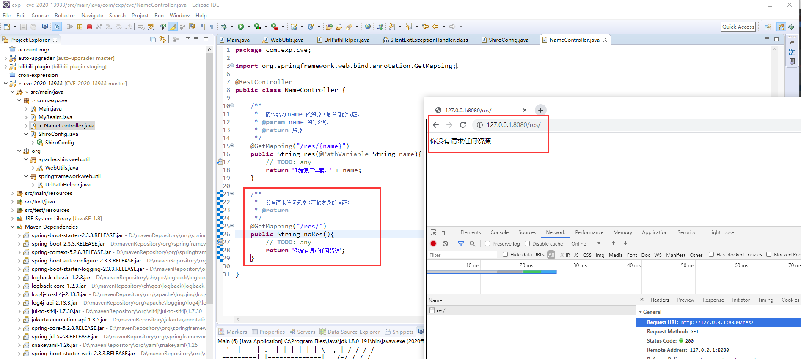
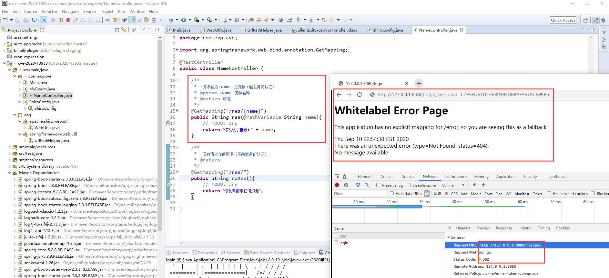
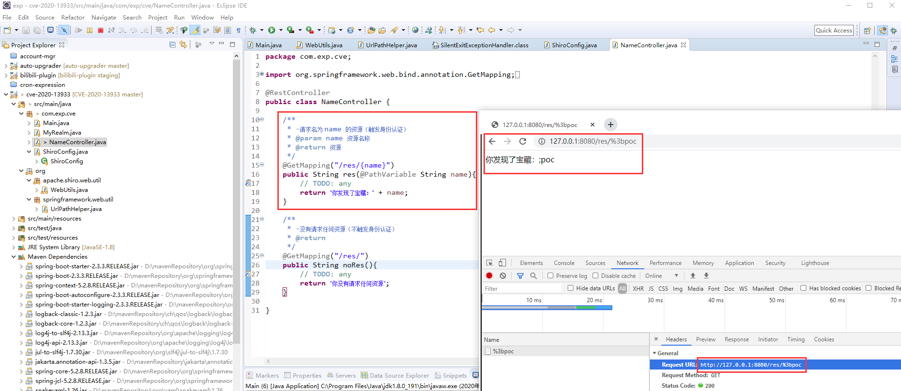
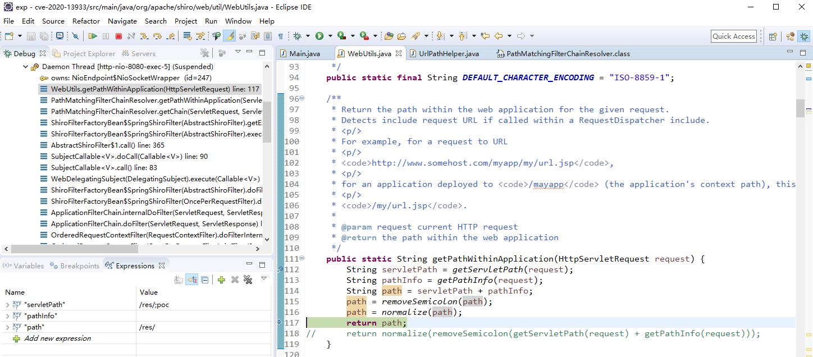
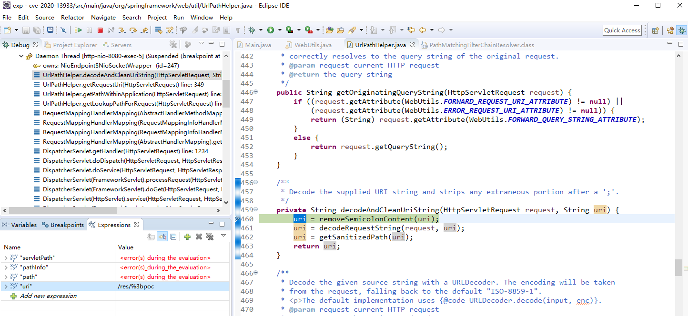

漏洞背景
Apache Shiro 是一个强大且易用的 Java 安全框架，执行身份验证、授权、密码和会话管理，通常会和 Spring 等框架一起搭配使用来开发 web 应用（请求在到达 Spring 之前，会先经过 Shiro 认证身份）。
因为某个特定测试场景，Shiro 被白帽子发现了 CVE-2020-11989 身份校验绕过漏洞，漏洞原因在于 Shiro 处理 url 的逻辑与 spring 存在差异。
对此官方发布了 1.5.3 版本进行修复，但是因为修复补丁存在缺陷， 再次导致了 CVE-2020-13933 身份校验绕过漏洞，官方不得不再次发布了 1.6.0 修复版本。
漏洞靶场
靶场搭建
环境要求：
- JDK:
1.8 - spring-boot:
2.3.3 - apache-shiro:
1.5.3 (< 1.6.0)
靶场源码（Maven）： https://github.com/lyy289065406/CVE-2020-13933
靶场关键代码说明：
ShiroConfig.java： 权限配置， 当请求/res/*资源时， 302 跳转到登陆页面进行身份认证NameController.java：
□/res/{name}： 请求名为name的的资源（触发身份认证）
□/res/： 不请求任何资源（不触发身份认证）
此靶场已收录到 Vulmon 漏洞情报搜索引擎
靶场验证
不在请求路由中指定资源名称时，不触发身份验证，也无资源返回： http://127.0.0.1:8080/res/

在请求路由中指定资源名称时，302 跳转到身份验证页面： http://127.0.0.1:8080/res/poc

构造特定 PoC 请求指定资源时，不触发身份验证，并返回资源： http://127.0.0.1:8080/res/%3bpoc （%3b 是 ; 的 URL 编码）

漏洞分析
前置漏洞回顾
通过漏洞背景可知， CVE-2020-13933 是 CVE-2020-11989 的修复补丁不当产生的，因此有必要了解 CVE-2020-11989 的漏洞原因、以及官方补丁的改动位置。
通过查阅 CVE-2020-11989 现有的漏洞分析报告， 可知 Shiro 为了处理请求路由中形如 ;jsessionid=C7E5ED51DCE6B918FD88AE5575C589B6 的参数，会截断 ; 后的内容。
对于 Shiro < 1.5.3 的版本，因为相关逻辑缺陷，若刻意构造路由类似 /;/site/res/name 的请求，会因为匹配错误导致请求路由截断成 /，此时因为没有指定要请求的资源路由，故不会触发 Shiro 的身份认证逻辑。
因为不需要认证身份，请求 /;/site/res/name 被直接送到 Spring 获取资源，经过 Spring 格式化后（截取根目录后的资源路径），请求路由截断成 /res/name，最终可以成功获取到资源页面，导致 Shiro 权限绕过。
为了修复这个漏洞， Shiro 发布了 1.5.3 版本，可以对比下官方修复的代码位置：
【修改前】 Shiro 1.5.2:
public static String getPathWithinApplication(HttpServletRequest request) {
String contextPath = getContextPath(request);
String requestUri = getRequestUri(request);
if (StringUtils.startsWithIgnoreCase(requestUri, contextPath)) {
// Normal case: URI contains context path.
String path = requestUri.substring(contextPath.length());
return (StringUtils.hasText(path) ? path : "/");
} else {
// Special case: rather unusual.
return requestUri;
}
}【修改后】 Shiro 1.5.3:
public static String getPathWithinApplication(HttpServletRequest request) {
return normalize(removeSemicolon(getServletPath(request) + getPathInfo(request)));
}当前漏洞分析
由于官方更新 Shiro 1.5.3 版本后，身份绕过漏洞依旧存在，说明这次代码修复的逻辑仍有不完善的地方。
为了分析漏洞成因，可以先搭建上述的靶场，然后在 Shiro 1.5.3 的官方修复代码打断点 DEBUG。
不难发现，修复代码位置在 Shiro 处理请求路由的入口处 WebUtils.java。为了便于分析，这里对代码做了逐行拆解：
// 输入请求路由： http://127.0.0.1:8080/res/%3bpoc
public static String getPathWithinApplication(HttpServletRequest request) {
String servletPath = getServletPath(request); // servletPath = "/res/;poc" （URL 已解码）
String pathInfo = getPathInfo(request); // pathInfo = ""
String path = servletPath + pathInfo; // path = "/res/;poc"
path = removeSemicolon(path); // path = "/res/" （截断 ; 后面的内容）
path = normalize(path); // path = "/res/" （标准化 URL： 处理双斜杠、路径穿越）
return path; // path = "/res/"
// return normalize(removeSemicolon(getServletPath(request) + getPathInfo(request)));
}
很明显，该 PoC 通过 Shiro 处理后， 请求路由 /res/%3bpoc 会变成 /res/， 根据前面靶场的验证结果，因为此路由没有指定资源名称，因此不会触发身份认证，请求会直接送到 Spring 的相关逻辑处理以获取资源。
此时再 DEBUG 看看 Spring 的处理请求路由的入口代码 UrlPathHelper.java 是如何做的：
// 输入请求路由： http://127.0.0.1:8080/res/%3bpoc
private String decodeAndCleanUriString(HttpServletRequest request, String uri) { // uri = "/res/%3bpoc" （URL 未解码）
uri = removeSemicolonContent(uri); // uri = "/res/%3bpoc" （截断 ; 后面的内容）
uri = decodeRequestString(request, uri); // uri = "/res/;poc" （URL 字符解码）
uri = getSanitizedPath(uri); // uri = "/res/;poc" （标准化 URL： 处理双斜杠）
return uri;
}
其实在这里已经可以发现，因为 Shiro 和 Spring 对 URL 的处理逻辑顺序不一致，导致两者得到的路由不同。
不妨根据这两段代码的逻辑，横向对比输入不同 URL 的情况下最终结果有什么差异。
- 当输入为 http://127.0.0.1:8080/res/%3bpoc 时：
| Shiro 逻辑 | 路由 | Spring 逻辑 | 路由 |
|---|---|---|---|
| 输入 | /res/%3bpoc |
输入 | /res/%3bpoc |
| URL 解码 | /res/;poc |
截断 ; |
/res/%3bpoc |
截断 ; |
/res/ |
URL 解码 | /res/;poc |
| URL 标准化 | /res/ |
URL 标准化 | /res/;poc |
| 资源名 | 无资源名 | 资源名 | ;poc |
| 结果 | 不触发验证 | 结果 | 返回资源页面 |
- 当输入为 http://127.0.0.1:8080/res/;poc 时：
| Shiro 逻辑 | 路由 | Spring 逻辑 | 路由 |
|---|---|---|---|
| 输入 | /res/;poc |
输入 | /res/;poc |
| URL 解码 | /res/;poc |
截断 ; |
/res/ |
截断 ; |
/res/ |
URL 解码 | /res/ |
| URL 标准化 | /res/ |
URL 标准化 | /res/ |
| 资源名 | 无资源名 | 资源名 | 无资源名 |
| 结果 | 不触发验证 | 结果 | 无资源返回 |
- 当输入为 http://127.0.0.1:8080/res/poc 时：
| Shiro 逻辑 | 路由 | Spring 逻辑 | 路由 |
|---|---|---|---|
| 输入 | /res/poc |
输入 | /res/poc |
| URL 解码 | /res/poc |
截断 ; |
/res/poc |
截断 ; |
/res/poc |
URL 解码 | /res/poc |
| URL 标准化 | /res/poc |
URL 标准化 | /res/poc |
| 资源名 | poc |
资源名 | poc |
| 结果 | 302 跳转身份认证 | 结果 | 返回资源页面 |
- 当输入为 http://127.0.0.1:8080/res/ 时：
| Shiro 逻辑 | 路由 | Spring 逻辑 | 路由 |
|---|---|---|---|
| 输入 | /res/ |
输入 | /res/ |
| URL 解码 | /res/ |
截断 ; |
/res/ |
截断 ; |
/res/ |
URL 解码 | /res/ |
| URL 标准化 | /res/ |
URL 标准化 | /res/ |
| 资源名 | 无资源名 | 资源名 | 无资源名 |
| 结果 | 不触发验证 | 结果 | 无资源返回 |
分析结论
显然除了第 1 种输入，其它 3 种输入的最终输出碰巧都是一致的，而第 1 种输入正是此漏洞的 PoC 。
造成这种情况的根本原因在于 Shiro 和 Spring 在【URL 截断】和【URL 解码】的操作顺序不一致。
回顾 URL 的处理过程，总结下来就是：
- URL 进入到 Shiro 时，因为先做 URL 编码
%3b => ;，使得路由中的资源名被截断删除 - Shiro 误以为请求路由中无资源名，故该次请求不触发身份认证逻辑
- 因不需要身份认证，请求路由被直接转发到 Spring
- Spring 从请求路由中正确截取资源名称，并返回资源页面
- 最终导致 Shiro 身份认证被绕过
由于 Shiro 的身份认证是通过判断 URL 匹配来实现的，只要能找到 Shiro 处理 URL 逻辑与 Spring 框架处理 URL 逻辑不一致的地方，都有可能造成身份认证绕过。
漏洞利用
对于这个漏洞，PoC 亦是 EXP ，只需要把 %3b 放在请求资源路由的最前面，即可绕过认证实现资源访问。
例如： http://127.0.0.1:8080/res/%3b{资源名} （res 属于站点根目录， 不属于资源路由的一部分）
当资源路由为后台路径时，攻击者即可绕过认证访问到后台资源。
漏洞修复
从漏洞分析过程可知，只需要调整 Shiro 处理逻辑顺序，使其与 Spring 保持一致即可修复此漏洞。
但是可能考虑到相同的漏洞已经出现连续了 2 次，所以官方使用了一种更灵活的修复方式：
不难发现官方补丁 Shiro 1.6.0 并没有修复 Shiro 1.5.3 中有关 WebUtils 的问题代码。
取而代之的是引入了责任链模式，增加了针对 URL 的预处理过滤器 InvalidRequestFilter.java，使得 URL 在到进入 Shiro 处理逻辑之前，就通过过滤器对分号、反斜杠和非 ASCII 字符预先进行过滤。尔后若这段修复代码再出现类似漏洞 ，要修复则简单得多。
挖掘思路
前面已经说过，由于 Shiro 的权限校验是通过判断 url 匹配来实现的，因此一般的挖掘思路是： 如果能找到 Shiro 处理 URL 逻辑与 web 框架处理 URL 逻辑不一致的地方，那么就有可能利用它进行权限绕过。
但说到底，此漏洞是某个白帽子在做渗透测试试题时偶尔发现的，否则除非是深谙 Shiro 和相关 web 框架的源码、知道两者处理 URL 逻辑的不一致，不然要在正常情况下发现这个漏洞几无可能。
在不熟悉底层代码逻辑的前提下，可以留意所关注框架的 CVE 修复补丁，通过确认修复内容，推理修复逻辑是否完整合理，也不失是一种捷径。这个漏洞也是这样被发现的，可以说这个漏洞的发现，偶然中带着必然。